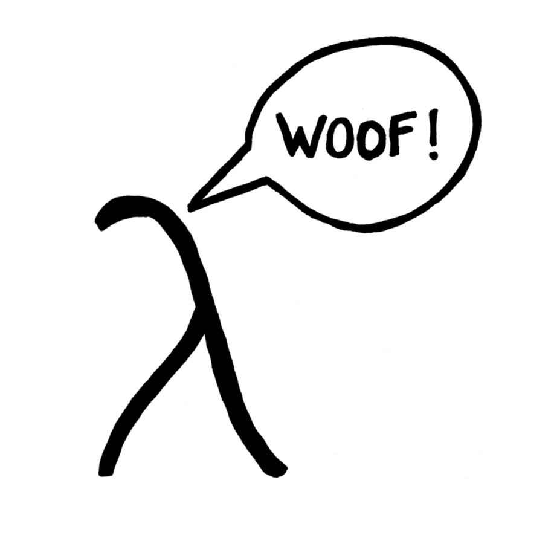

Mika Illouz

email: mika@illouz.net,
GitHub
Here are some of the things I've done professionally:
- Engineer: At OneChronos, I'm
developing novel discrete auction mechanisms to transform the
way electronic trading works.
- Quant Trader: At HFT trading firm Xambala, I
researched, implemented, and deployed novel high-frequency
trading strategies in US equities based on novel
machine-learning techniques, and using a mix of passive and
aggressive order-placement schemes. I also developed the
firm's dark-pool order-placement capabilities. I briefly
worked at FINAL as part of its acquisition of Xambala.
- Founder: At EigenDog, I developed and launched a
web-service for machine learning of gradient boosted tree
models that scales over large training sets. System operated
over ensembles of Amazon EC2 resources, which it dynamically
instantiated in proportion to data volume. Sales efforts led
to engagements with several customers in retail, online
advertising, and equities trading.
- Engineer, Manager: At Wink, I managed a team of ten
software engineers and researchers at this consumer internet
company through its acquisition. Led the design, development,
and implementation of company’s core product from inception as
demo project.
- Engineer: At DemandTec, I developed statistical
models to predict the sales volume of retail products. I also
implemented novel predictive modeling algorithms, used in
mixed-integer optimization algorithms for maximizing retail
revenue or profit.
- Engineer: At Sun Microelectronics, I developed
algorithms for optimizing analog circuits for size, power, and
latency. I also designed software tools for circuit
verification, and developed parsers for various electronic CAD
file formats used in verification and synthesis flows.